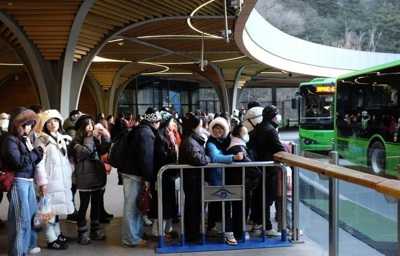
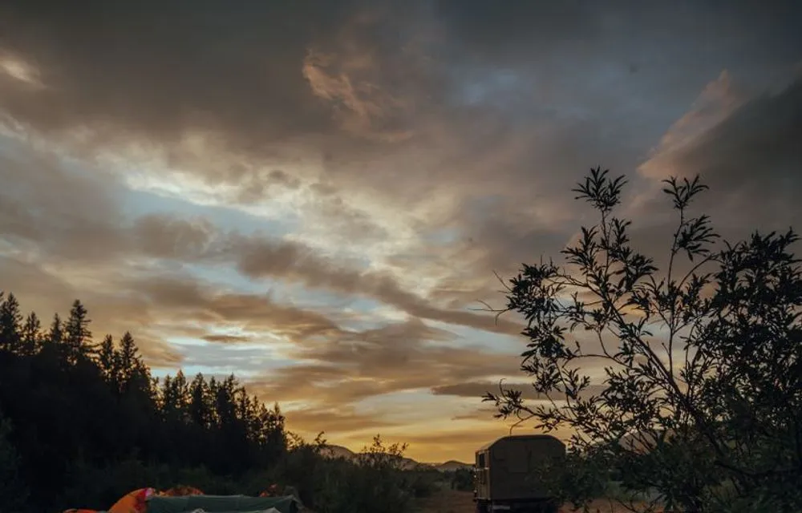

Routes
Four ways to arrive
| Way | Time | Cost | Good to know |
|---|---|---|---|
| Train and shuttle | About 1 h 30 from London | £12 shuttle, return | Trains to Moreton station, then a shuttle every 20 minutes from 10 am on Friday. The easiest way to arrive. |
| Car share | About 2 h from London | £20 parking, whole weekend | Parking is limited and goes to cars with three or more people. Book it with your ticket. |
| Coach | About 2 h 30 from London | From £25, return | Group coaches leave London and Birmingham on Friday morning and return on Monday. |
| Cycle | Any time | Free | Secure bike parking by the main gate and a repair stand. Lights are essential after dark. |

Camping planner
Where will you sleep?

Packing list
Find us
Fifteen minutes from the station
Follow the lanterns from Moreton station, or take the shuttle to the main gate. Camping opens on Thursday from 2 pm.
Add camping to your ticket